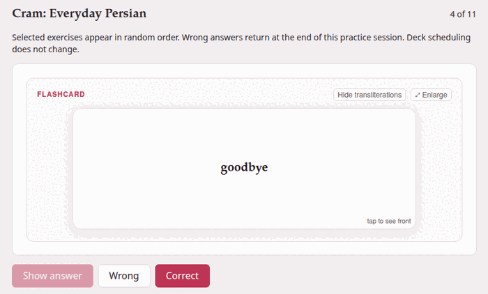
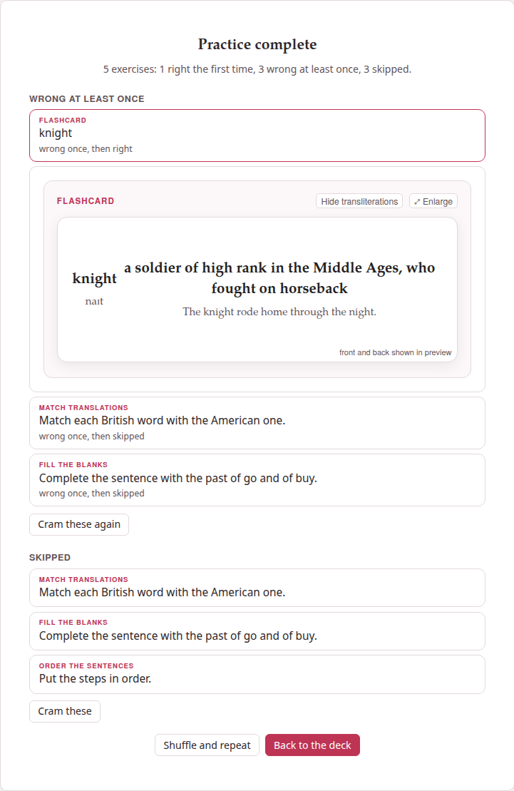

Cram mode
Studying follows the scheduler: it shows what is due, and nothing else. Sometimes you want the opposite — every exercise of tomorrow’s lesson, now, however recently you saw them, and again until you get them all. That is cram mode. It never changes a schedule or a history, so you can cram as often as you like without upsetting what the deck has learned about you.
1. Starting#
- On the deck’s page, select the exercises to practise — ticked one by one, Select shown after a filter, Select by tag, or Select all (see Selecting many exercises).
- Press Cram 12 exercises — the button counts what is selected, and reads Cram exercises, dimmed, while nothing is.
The cram page opens with a reminder of the rules: Selected exercises appear in random order. Wrong answers return at the end of this practice session. Deck scheduling does not change.

2. Practising#
At the top right, 3 of 12 says where you are. The exercises come in a random order, one at a time and unsolved, as on the study page:
- An exercise with an answer
- : answer it and press Check. It says Correct or Not quite, shows its explanations and, for a matching or placement exercise answered wrong, its Correct answer underneath. Then Next exercise — or Finish on the last one.
- A flashcard
- : Show answer (or a click on the card) turns it; then say how it went with Wrong or Correct, which moves on at once. The card plays its front’s recording when it is shown and its back’s when it is turned, as on the study page, and ⤢ Enlarge works here too.
- An exercise that needs attention
- has only Next exercise, and the end counts it among the skipped.
Skip leaves an exercise unanswered and moves on. It does not come back in this practice — nor does the turn a wrong answer earlier put back for it — and the end names it among the skipped. It is there until the exercise is answered: once Check has said Correct or Not quite, only Next exercise goes on; a flashcard turned but not yet marked can still be skipped.
A wrong answer comes back. A scored exercise you got wrong, and a card you called Wrong, goes to the end of the queue, and 3 of 12 becomes 3 of 13. It keeps coming back, each time at the end, until you get it right — or skip it — which is the whole point of cramming.
There is no rating here, and nothing is saved: not the answers, not the results. Cram as often as you like.
3. The end#
Practice complete, and how it went: 12 exercises: 8 right the first time, 3 wrong at least once, 1 skipped. Under it, what to look at again, each list only when it has something in it:
- Wrong at least once
- : every exercise you got wrong, in the order they came up, each saying how many times, and whether you then got it right or skipped it.
- Skipped
- : every exercise you skipped.
Click one to see it solved, under it; click again to put it away. Cram these again under the first list, and Cram these under the second, start a practice of just those.

- Shuffle and repeat
- starts again with the same exercises, in a new random order.
- Back to the deck
- — or ← Deck at the top at any moment — returns to the deck’s page, where your selection is still ticked, ready for another round or for something else.
Opened with nothing selected, the cram page only says Select exercises in Browse, then choose Cram exercises.
4. Cram or study?#
| Study | Cram | |
|---|---|---|
| Which exercises | the ones that are due | the ones you selected |
| In what order | learning, reviews, new (more) | random |
| After an answer | you rate it: Again, Hard, Good, Easy | right or wrong only |
| A wrong answer | comes back after its learning step | comes back at the end of this session |
| The schedule | moves on | never changes |
| The daily limits | apply | do not apply |
The two go well together: study every day, and cram a lesson’s exercises on the evening before you need them.
5. As a page for a website#
Export selected to HTML, beside Cram exercises on the deck’s page, makes the selected exercises one HTML file that crams them, for students who have no Parseh: put it on your class’s website, or send it. Select the exercises (the button is dimmed while nothing is selected) and press it. The file downloads, named after the deck (persian-practice.html), and a message says how many went: 12 exercises exported: persian-practice.html.
The page is this cram page, less the way back to a deck that is not there:
- the exercises in random order, one at a time, with Check, Show answer, Wrong and Correct, and Skip; a wrong answer comes back at the end;
- Practice complete, its tally and its two lists, each exercise opening solved, Cram these again and Shuffle and repeat;
- their pictures and recordings inside the file, and their formulas; a recording played only in part is cut down to that stretch where ffmpeg is installed;
- Aa, for the size of the text and the theme, and at its foot This page was exported from Parseh, with links to Parseh on GitHub and to this guide.
Only the exercises go into it, as they are shown: not their Markdown, their tags or their history. It schedules nothing, and the deck is not touched. Like a document’s page for a website, it keeps nothing and sends nothing: what a student does on it is forgotten when the tab closes. A page for a website says the rest, which is the same for both.
The button is in the Browser layout of the deck’s page only (Browser and Mobile).